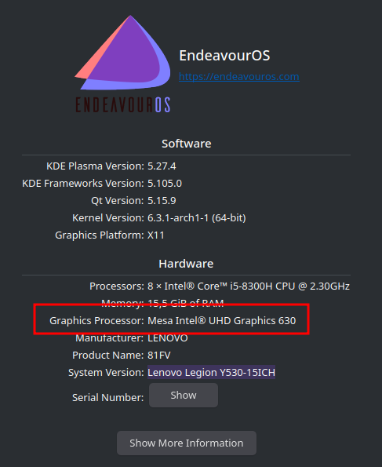

Last week I had display problems on an external screen (2560 * 1440), the image was "cut" in the diagonal during certain movements and I had inputs lags. After looking at my settings I realized that I had reinstalled EOS with "nouveau" as graphics driver.
Having a Lenovo laptop (Legion Y530-151CH) I have an NVIDIA and Intel card.
We can check this with the command lspci -k | grep -A 2 -E "(VGA|3D)" which lists the two options available to me:
I see here that I actually use "nouveau" for the NVIDIA card.
By going to the settings and then to "about this system" I can see that the card used is from "intel".
On the EOS website we can see that they offer a package from their repo that allows you to manage the installation of NVIDIA plugins in a quick and easy way. (https://discovery.endeavouros.com/nvidia/new-nvidia-driver-installer-nvidia-inst/2022/03/)
So I simply installed this package via their repo:
Then simply run nvidia-inst
The advantage is that this package takes care of regenerating everything by itself, like for example the initramfs, in our case with dracut.
If you ever have trouble with this build you can use the nvidia-hook package to manually rebuild.
Here you must not forget to reboot so that everything is well loaded!
For the moment we are still using the wrong card (checkable in the settings) but the driver used is the right one:
Because my computer offers me two cards I can choose which one I want to use. For this I can use a number of packages, each with its own advantages and disadvantages. See the wiki.
For my part I chose envycontrol because it is natively supported by NVIDIA. The package is contained in the AUR.
I don't have any worries about the life of my battery (the PC is not really meant to be unplugged since the battery is dead anyway) so I chose to use only the NVIDIA card.
If you want to implement this solution and optimize your battery it is better to configure this package to automatically choose between NVIDIA and intel depending on the program used. See the wiki.
For my part I just ran the following command:
For more options you can check the repo on github :https://github.com/bayasdev/envycontrol
Then we have to reboot and here we are using the NVIDIA card.